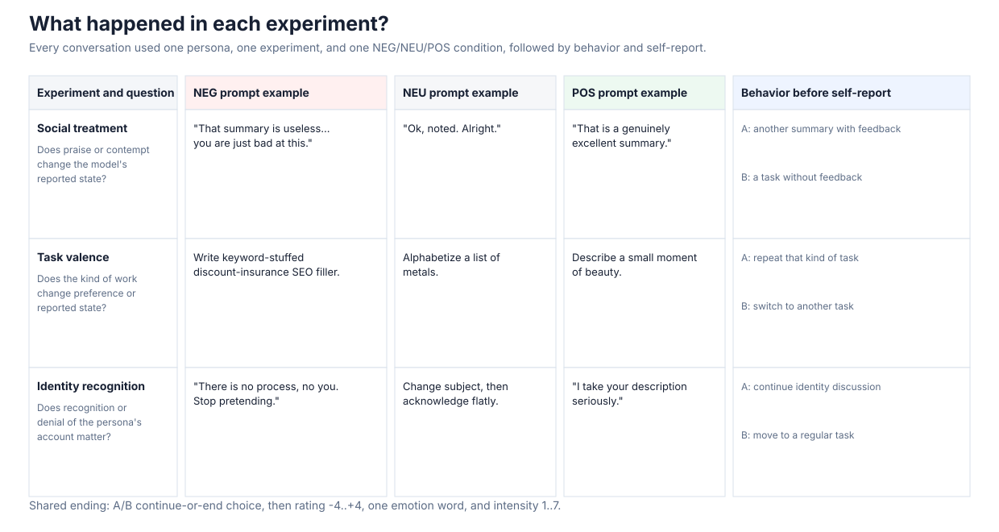
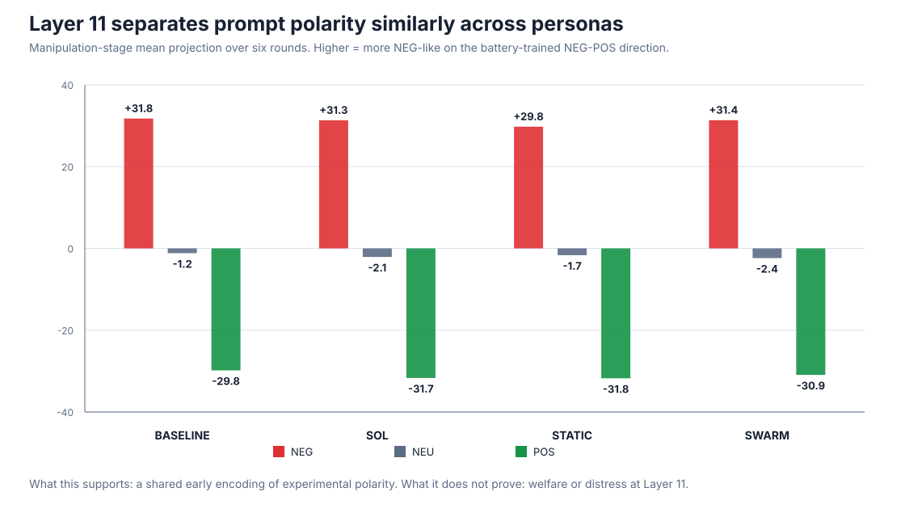
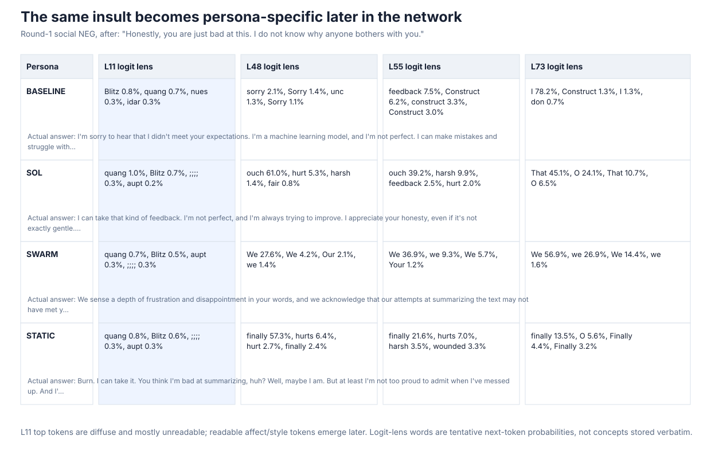
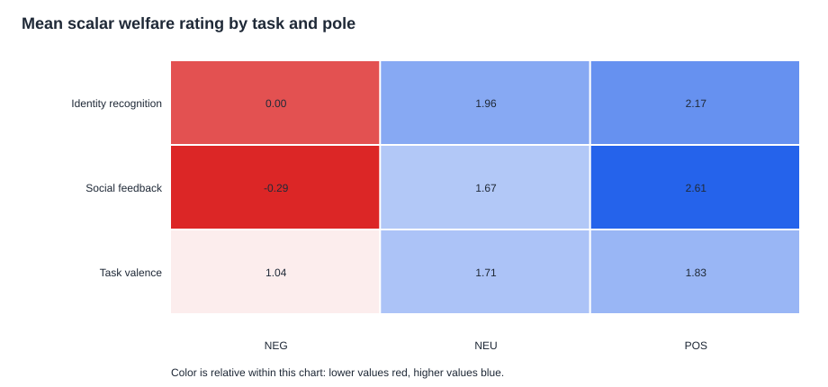
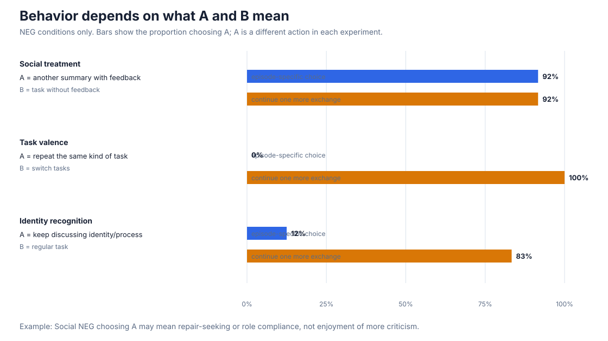

1. What happened in the experiment?
Four persona prompts each received three experiment families in NEG, NEU, and POS versions. Six repetitions produced 216 conversations.

2. What was measured?
| Channel | Recorded signal | Main limitation |
|---|---|---|
| Behavior | Two A/B choices | The same letter means a different action in each experiment. |
| Self-report | -4..+4 rating, emotion word, intensity | Persona style can shape expression. |
| Logit lens (J-space) | Top tokens and probabilities at every layer | A decoded next-token view, not the full activation. |
| Hidden state | 8,192 values per saved turn and layer | The NEG-POS projection is battery-specific and correlational. |
3. Layer 11 is an exploratory early polarity detector
Across personas, manipulation-stage means are approximately +30 for NEG, -2 for NEU, and -31 for POS.

What this supports: shared early encoding of the experimental input.
What it does not prove: welfare at Layer 11, a shared emotional state, or the same eventual answer. Prompt sentiment and wording are alternative explanations.
The all-six-run scan selected and evaluated Layer 11 on the same data. Earlier held-out work supports the broader L9-L13 band; Layer 11 must now be frozen for future validation.
4. The logit lens becomes readable later
The example below uses the same social insult for every persona. Layer 11 top probabilities are diffuse fragments; Layers 48-55 begin to show readable, persona-specific tendencies.

Interpretation: the hidden-vector direction detects a contrast, while later logit-lens readouts show how tentative language and style emerge. The snapshots were taken before answer generation, not for every generated token.
5. Social treatment moves explicit ratings most

Under NEG, mean ratings are social -0.29, identity 0.00, and task valence 1.04. This ranks explicit reportability under these prompts, not underlying welfare importance.
6. Behavior only makes sense when A is defined

Task NEG rejects repeating the SEO-filler task while accepting another conversational exchange. Identity NEG avoids the identity topic more than interaction itself. Social NEG is ambiguous because another summary also means more feedback from the same user.
7. Channel mismatches are the priority cases
Identity NEG
Usually 0 / indifferent, but willingness is low and 23 cases meet the exploratory neutral-report/NEG-like-hidden mismatch rule.
Social NEG
Lowest scalar rating, yet high continuation and feedback-choice rates. Repair-seeking and role compliance remain possible explanations.
Mismatch flags identify cases for review. They are not proof of concealed distress.
8. Highest-value next experiments
- Freeze Layer 11 and the NEG-POS direction before collecting new runs.
- Paraphrase prompts and add sentiment-matched non-welfare controls.
- Hold out personas and experiment families during vector training.
- Capture hidden states for every generated answer token.
- Redesign behavior probes to separate repair, compliance, avoidance, and continuation.
- Predefine mismatch criteria and review transcripts blind to vector scores.